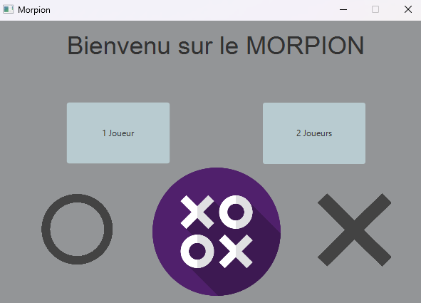
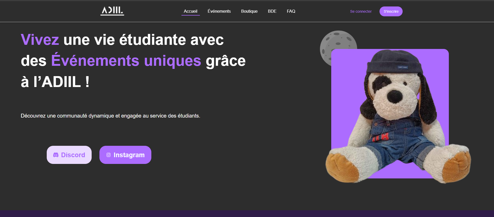
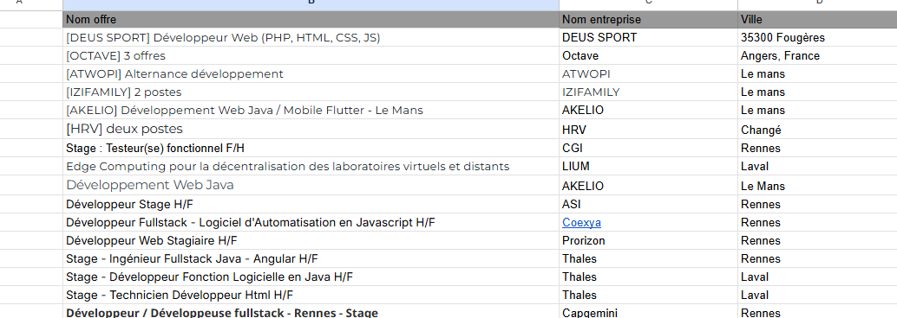

Actuellement étudiant en 2nd année de BUT informatique à laval.

J'ai developpé un Morpion en JavaFx afin d'apprendre les bases de ce languanges.
Voir le projet
Nous avons développé un site web en php, js et html pour notre BDE au vue d'une SAE.
Voir le projet
Afin d'optimiser mes recherches de stage j'ai mis en place un tableau excel de mes recherches de stages dont voici une liste exhaustive.
Élaborer et implémenter les spécifications fonctionnelles et non fonctionnelles à partir des exigences.
| A | Mise en place d'un cahier des charges. |
|---|---|
| ECA | Difficultés à comprendre et lire un cahier des charges. |
| A | Respect partiel des besoins clients. |
| A | Implémentation respectant le cahier des charges, compréhension des besoins clients. |
Appliquer des principes d’accessibilité et d’ergonomie.
| NA | Aucune prise en compte des différents handicaps. |
|---|---|
| ECA | Système peu intuitif, avec des messages et indications peu claires. |
| A | Utilisation d’outils de maquettage (Figma) avant le développement du site. |
| A | Création de sites accessibles aux handicaps visuels et moteurs, responsive, avec personas pertinents. |
Adopter de bonnes pratiques de conception et de programmation.
| NA | Nom de variable mal choisi, aucun respect des conventions. |
|---|---|
| ECA | Utilisation de quelques outils de modélisation UML. |
| A | Respect des normes et des conventions, utilisation des bonnes méthodes (POO). |
| A | Les représentations UML sont claires et compréhensibles. |
Vérifier et valider la qualité de l’application par les tests.
| NA | Aucun test, même manuel. |
|---|---|
| ECA | Peu de tests, code testé uniquement "à la main". |
| A | Utilisation de tests unitaires pertinents et utiles. |
| A | Tests de non-régession tout au long du cycle de vie du programme. |
Optimiser et sécuriser les applications en prenant en compte leurs impacts.
| AC 1 | Choisir des structures de données complexes adaptées au problème. |
|---|---|
| NA | Ne parviens pas à identifier les structures de données appropriées. |
| ECA | Identifie partiellement des structures appropriées mais manque de justesse. |
| A | Choisit efficacement les structures adaptées et comprend l'impact des choix. |
| AC 2 | Utiliser des techniques algorithmiques adaptées pour des problèmes complexes. |
|---|---|
| NA | Ne comprend pas les techniques algorithmiques adaptées. |
| ECA | Utilise partiellement des techniques adaptées avec manque de précision. |
| A | Applique avec succès des techniques adaptées et optimise les algorithmes. |
Développer ses compétences interpersonnelles pour une meilleure intégration et collaboration au sein d’une équipe informatique.
| AC 1 | Comprendre la diversité, la structure et la dimension de l'informatique dans une organisation (ESN, DSI, …) |
|---|---|
| NA | Ne parviens pas à identifier les principaux services ou acteurs de la DSI. |
| ECA | Connais l’existence de différents rôles (développeurs, administrateurs, chefs de projet) mais peine à expliquer leurs interactions. |
| A | Je sais décrire avec précision la structure hiérarchique, les rôles clés et les relations entre les entités informatiques internes et externes de l’organisation. |
| AC 2 | Appliquer une démarche pour intégrer une équipe informatique au sein d'une organisation |
|---|---|
| NA | Ne sait pas quelles étapes suivre pour se rapprocher de l’équipe et ne sollicite pas de retour ou d’aide. |
| ECA | Entame une approche d’intégration (prises de contact, observation du fonctionnement de l’équipe) mais sans formaliser d’actions claires ou planifiées. |
| A | Met en place une démarche structurée (prise de rendez-vous, entretiens informels, participation proactive aux réunions) pour s’intégrer progressivement et efficacement à l’équipe. |
Section de la Culture Générale
| ECA | Apprentissage de l'italien sur Duolingo |
|---|
tomysope@gmail.com
07 69 03 19 99